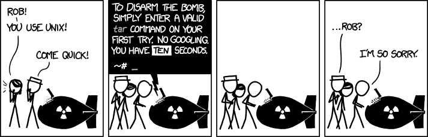
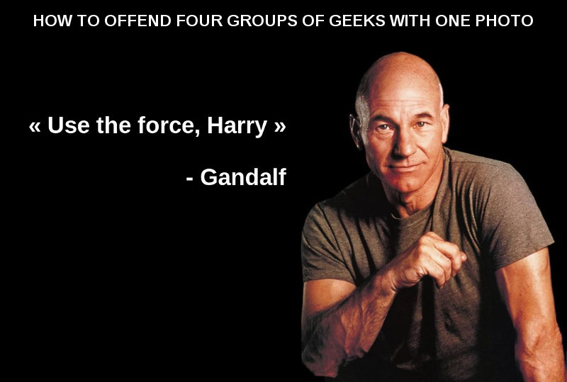
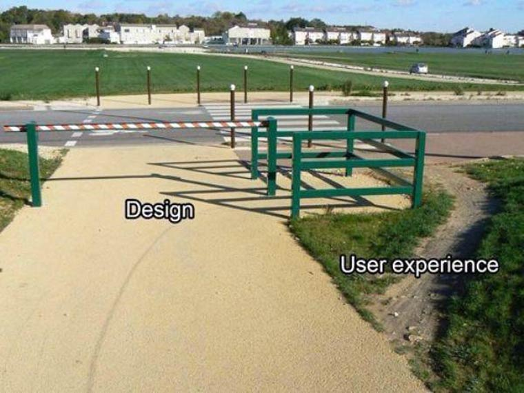
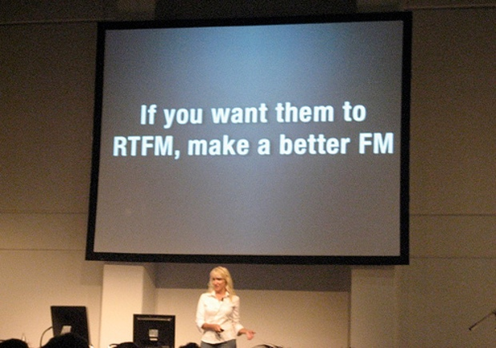

http://note.inli.org/#p/dc094b16
Êtes-vous
un bon développeur ?
Est-ce difficile d'être
un bon développeur ?
Qu'est-ce qu'un
bon développeur
?
- Est brillant
- Résout tous les problèmes facilement
- N'utilise pas de technos dépassées
- Maîtrise toutes les technos à la mode
- Connaît donc toutes les docs par cœur
- Pond 10 projets innovants par mois
- A des milliers de followers sur Github et Twitter
- Autre ?
Qu'est-ce qu'un
bon développeur
?
Qu'est-ce qu'un
bon développeur
super-héro
?
Super-héro guidelines
- Être un dieu (demi-dieu toléré)
- Avoir des super-pouvoirs (innés ou obtenus accidentellement)
- Être ultra-riche (et adorer les goodies à son image)
La vérité vraie sur ce qu'est un bon développeur
3 grands axes
- Outils
- Personnalité
- Mise en œuvre
Outils
- Navigateur avec devtools
- Éditeur de code
-
Terminal
- Gestionnaire de version
- Gestionnaire des dépendances
- Pré-processeurs
- Vérification de code
- Machine(s) virtuelle(s)
- Documentation
- Communauté
Règle n°1
Aimer son job

Règle n°2
Assumer de ne pas tout savoir

Règle n°3
Avoir un esprit critique contructif
Règle n°4
Être curieux !
Utiliser les outils à bon escient
Même quand vous ne les aimez pas...
Faire de la veille
Expérimenter
Faire évoluer ses techniques

Prendre du recul

RTFM + Make the better FM
Coder moins pour coder mieux
Respecter les conventions
Être un bon développeur
est juste une question d'attitude
Pas besoin d'être un génie...
Et personne n'est à l'abri d'avoir de bonnes idées ;)

Questions ?